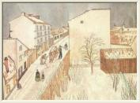
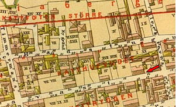

Södermalm i tid och rum. Stockholm

Josabeth Sjöbergs tofte bostad, Blecktornsgränd 6/Tavastgatan 14, gårdsinteriör. Det högra vindsfönstret på gaveln var Josabeths bostad.


 Utsikt västerut från Josabeth Sjöbergs tofte bostad, Blecktornsgränd 6/Tavastgatan 14. På gatans
Utsikt västerut från Josabeth Sjöbergs tofte bostad, Blecktornsgränd 6/Tavastgatan 14. På gatansvänstra sida finns husen nr 17-29. På högra sidan syns nr 16.